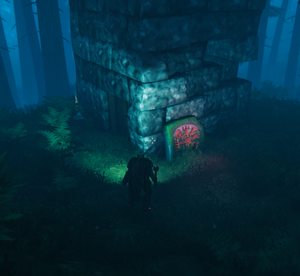
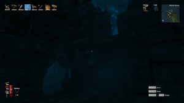
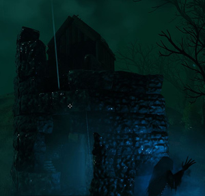

废墟塔楼
本站支持中英文站内搜索。带 ↗ 的链接指向外部网站；各页来源版本见页脚。


废墟塔楼可指多个生态区域中的各种地点地点，外形像部分损毁石塔。
位于青青草原，仅木墙建成，二层宝箱含多种战利品。
位于黑暗林山，较完整石塔带木门，门前木桶。侧面可能有指向古树长老的祭坛的符文石，由一群灰矮人守卫。
塔内楼梯下有战利品宝箱，门前木桶打破也掉多种材料。


位于黑暗林山，几乎全毁仅留地基。中央战利品宝箱由一群灰矮人守卫，偶尔有野生蜂巢。


位于幽暗沼泽，多种以圆塔为主的变体，部分由尸堆守卫，部分顶部带小屋，可作临时基地或前哨。
位于幽暗沼泽，半毁圆塔带指向邪骨恶灵祭坛的符文石，其前有尸体堆。
位于凛冽雪山，大小不同，可比其他塔废墟大得多，通常有较完整塔。可找骷髅怪，偶尔冰霜龙母导向符文石。
| 生物群系 | |||||||||||||||||||
|---|---|---|---|---|---|---|---|---|---|---|---|---|---|---|---|---|---|---|---|
| 重要 地点 |
| ||||||||||||||||||
| 资源 采集点 |
| ||||||||||||||||||
A Ruined tower can refer to various points point of interest found in several biomes. They look like partially destroyed stone towers.
Found on the Meadows biome, built solely with wooden walls. The second floor has a chest containing various loot.
Found on the Black Forest biome, a somewhat complete stone tower with a wooden door and a barrel in front of it. It can also have a rune stone on its side that points toward the location of The Elder's sacrificial altar. This tower variant is guarded by a pack of Greydwarfs.
Inside the tower is a loot chest placed under the staircase. Breaking the barrel in front will also drop various materials.
Found on the Black Forest biome, half of this stone tower has been destroyed. This tower will be guarded by several Skeletons. A chest may be found on top of these towers.
Found on the Black Forest biome, almost completely destroyed leaving only the foundation behind. A pack of Greydwarfs will be guarding the loot chest that can be found in the middle. These towers occasionally house a wild beehive.
Found in the Swamps. Has multiple variations of mostly circular towers. Some can be guarded by Body Piles. Also, some are topped huts that can be used as temporary bases or outposts.
Found in the Swamps. A half-destroyed circular tower that has a runestone pointing to Bonemass's altar location. A Body Pile will be in front of the runestone.
Found in the Mountains. They can vary in sizes, and can be quite large compared to other ruined towers. There is usually a somewhat intact tower. Skeletons can be found here, as well as the occasional Moder Vegvisir.
| Biomes | Meadows • Black Forest • Ocean • Swamp • Mountain • Plains • Mistlands • Ashlands • Deep North • World Edge | ||||||||||||||||||
|---|---|---|---|---|---|---|---|---|---|---|---|---|---|---|---|---|---|---|---|
| Points of interest |
| ||||||||||||||||||
| Resource nodes |
| ||||||||||||||||||